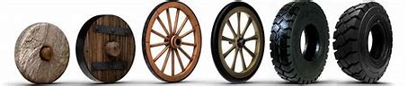

How did it come about and who did it?
The tyre, as we know it today, was not invented by a single person, but the result of an evolution over time. The invention of solid rubber tire by Robert William Thomson in 1845 and the introduction of pneumatic rubber bicycle tire by John Boyd Dunlop in 1888 were crucial steps in this evolution. With the emergence of motor vehicles, tire technology was adapted to meet automotive needs, with significant contributions from various companies such as Michelin, which introduced radial tyres in 1946. Therefore, the modern tyre is the result of innovations from various inventors over time.
Function and Composition
The tyres have the main function of providing grip, support and comfort to vehicles, allowing a safe and effective. They play essential roles including road grip, load bearing, impact absorption and contribution to steering and handling. The tyres are composed of several layers, including the tread, the carcass, the straps and other parts, each playing a specific role in the structure and performance of the tire. There are different types of tyres, adapted to various conditions and uses, such as summer, winter, all-season and high performance. Its composition and design vary according to the intended use and road conditions.
Evolution

Here we can see a brief evolution of the tire. When we analyze we see that the tire started from the wheel to the tire we know today